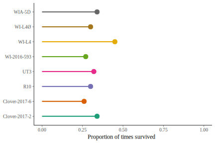
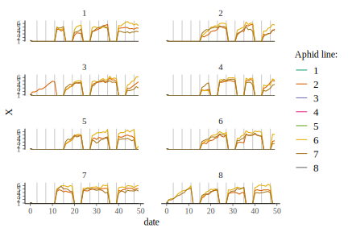
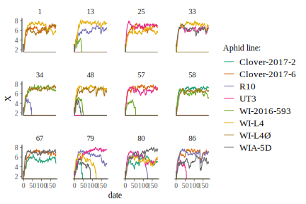
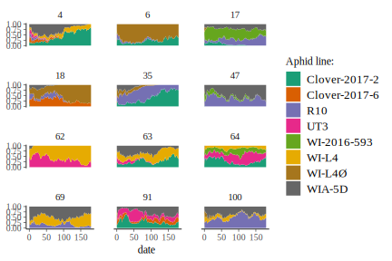
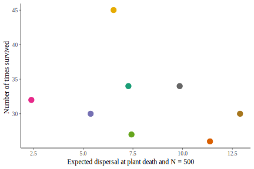
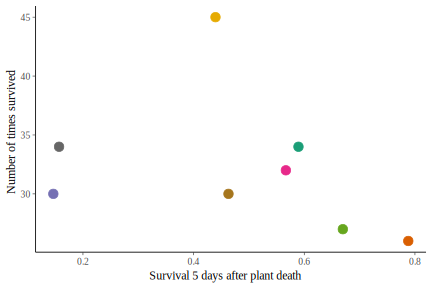
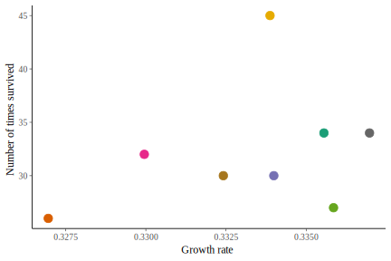
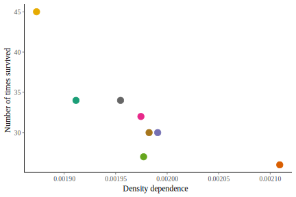
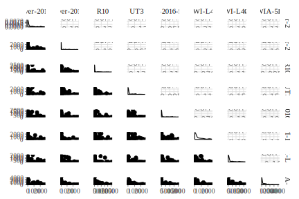

Load dataset
growth <-
load_data(impute_fxn = impute) %>%
mutate(line = paste(line)) %>%
bind_rows(clonewars:::load_pz_data(impute_fxn = impute)) %>%
mutate_at(vars(line, rep), funs(factor)) %>%
# Now filter out early part of each time series, before N > 6
# N <= 6 is when the stochasticity associated with only starting with 2 adults
# appears to be strongest
group_by(line, rep) %>%
filter(1:n() >= which(N > 6)[1]) %>%
mutate(date = date - min(date)) %>%
ungroup()Load stan fit data
n_plants <- 8
n_lines <- 8
N_0 <- matrix(rep(48/16, n_lines * n_plants), n_plants, n_lines)
max_t <- 180
R <- apply(rstan::extract(stan_fit, "R", permuted = FALSE), 3, mean) %>%
as.numeric()
A <- apply(rstan::extract(stan_fit, "A", permuted = FALSE), 3, mean) %>%
as.numeric()
D_binom <- clonewars::disp_estimates$binom
D_nb <- clonewars::disp_estimates$nb
process_error <- apply(rstan::extract(stan_fit, "s_epsilon", permuted = FALSE),
3, mean) %>%
as.numeric()
plant_mort_0 <- clonewars::plant_death$after_max_mort_coefs$inter
plant_mort_1 <- clonewars::plant_death$after_max_mort_coefs$date
plant_death_age_mean <- clonewars::plant_death$until_max_summ$max_mean
plant_death_age_sd <- clonewars::plant_death$until_max_summ$max_sd
repl_times <- seq(4, max_t, 4) - 1
repl_age <- 3
extinct_N <- 6
n_cages <- 100
n_cores <- parallel::detectCores() - 1lines <- 1:8
set.seed(654651984L)
sim_df <- cwsims::sim_cages(n_cages, N_0[,lines], max_t, R[lines], A[lines],
D_binom[lines,], D_nb[lines,], process_error,
plant_mort_0[lines], plant_mort_1[lines],
plant_death_age_mean, plant_death_age_sd,
repl_times, repl_age, extinct_N, n_cores) %>%
mutate(X = log(N)) %>%
identity()
sim_by_cage <- sim_df %>%
mutate(line = factor(line,
levels = seq_along(levels(growth$line)[lines]),
labels = levels(growth$line)[lines]),
rep = factor(rep)) %>%
group_by(rep, line, date) %>%
summarize(N = sum(N)) %>%
group_by(rep, date) %>%
arrange(line) %>%
mutate(prop = N / sum(N),
prop_end = cumsum(prop),
prop_start = lag(prop_end, default = 0)) %>%
ungroup() %>%
mutate(X = log(N)){
# This should have zero rows bc having total extinction makes no sense:
sim_by_cage %>%
filter(date == max_t) %>%
group_by(rep) %>%
summarize(N = sum(N)) %>%
ungroup() %>%
filter(N == 0) %>%
nrow() %>%
`==`(0) %>%
print()
# This should also have zero rows bc it means aphids spontaneously appeared
sim_by_cage %>%
group_by(rep, line) %>%
filter(N == 0, dplyr::lead(N) > 0) %>%
ungroup() %>%
nrow() %>%
`==`(0) %>%
print()
}
#> [1] TRUE
#> [1] TRUE
sim_by_cage %>%
filter(date == max_t) %>%
group_by(line) %>%
summarize(n = mean(N > 0)) %>%
ggplot(aes(line, color = line)) +
geom_linerange(aes(ymin = 0, ymax = n), size = 1) +
geom_point(aes(y = n), size = 3) +
scale_color_brewer(palette = "Dark2", guide = FALSE) +
scale_y_continuous("Proportion of times survived", limits = c(0,1)) +
xlab(NULL) +
coord_flip() +
NULL
sim_df %>%
filter(rep == 1, date < 50) %>%
mutate_at(vars(plant, line), factor) %>%
ggplot(aes(date, X)) +
geom_vline(xintercept = repl_times[repl_times < 50], color = "gray80") +
geom_line(aes(color = line)) +
facet_wrap(~ plant, nrow = 4) +
scale_color_brewer("Aphid line:", palette = "Dark2") +
NULL
sim_by_cage %>%
filter(rep %in% sample.int(n_cages, 12)) %>%
# ggplot(aes(date, N)) +
ggplot(aes(date, X)) +
geom_line(aes(color = line)) +
facet_wrap(~ rep) +
scale_color_brewer("Aphid line:", palette = "Dark2") +
NULL
sim_by_cage %>%
filter(rep %in% sample.int(n_cages, 12)) %>%
ggplot(aes(date, fill = line)) +
geom_ribbon(aes(ymin = prop_start, ymax = prop_end), color = NA) +
facet_wrap(~ rep, nrow = 4) +
scale_fill_brewer("Aphid line:", palette = "Dark2") +
NULL
sim_by_cage %>%
ggplot(aes(date, prop, color = line)) +
# ggplot(aes(date, gtools::logit(prop), group = rep, color = line)) +
geom_line(aes(group = rep), alpha = 0.25) +
facet_wrap(~ line, ncol = 4) +
# geom_smooth(method = "loess", se = FALSE, span = 0.4, color = "black", linetype = 2) +
# stat_summary(geom = "line", fun.y = mean, color = "black", size = 0.5) +
scale_color_brewer(palette = "Dark2", guide = FALSE) +
ylab("Relative abundance") +
xlab("Day") +
NULL
# sim_by_cage %>%
# group_by(rep, date) %>%
# summarize(H = -sum(prop[prop > 0] * log(prop[prop > 0])),
# N = sum(prop > 0),
# E = H / log(N)) %>%
# ungroup() %>%
# ggplot(aes(date, N)) +
# geom_line(aes(group = rep), alpha = 0.25, color = "dodgerblue") +
# NULL
sim_by_cage %>%
filter(date == max_t) %>%
group_by(line) %>%
summarize(n = sum(N > 0)) %>%
mutate(disp = map_dbl(line,
function(i) {
ind <- D_binom$line == i
stopifnot(sum(ind) == 1)
xmat <- as.matrix(D_binom[ind,-1])
gtools::inv.logit(xmat %*% rbind(1, 10, 10)) *
exp(D_nb$b0[ind]) * 500
})) %>%
ggplot(aes(disp, n, color = line)) +
geom_point(size = 3) +
scale_color_brewer(palette = "Dark2", guide = FALSE) +
ylab("Number of times survived") +
xlab("Expected dispersal at plant death and N = 500") +
NULL
sim_by_cage %>%
filter(date == max_t) %>%
group_by(line) %>%
summarize(n = sum(N > 0)) %>%
mutate(surv = map_dbl(line,
function(i) {
inds <- disp_estimates$binom$line == i
gtools::inv.logit(
plant_death$after_max_mort_coefs$inter[inds] +
plant_death$after_max_mort_coefs$date[inds] * 5)
})) %>%
ggplot(aes(surv, n, color = line)) +
geom_point(size = 3) +
scale_color_brewer(palette = "Dark2", guide = FALSE) +
ylab("Number of times survived") +
xlab("Survival 5 days after plant death") +
NULL
sim_by_cage %>%
filter(date == max_t) %>%
group_by(line) %>%
summarize(n = sum(N > 0)) %>%
mutate(R = map_dbl(line, ~ R[as.integer(.x)])) %>%
ggplot(aes(R, n, color = line)) +
geom_point(size = 3) +
scale_color_brewer(palette = "Dark2", guide = FALSE) +
ylab("Number of times survived") +
xlab("Growth rate") +
NULL
sim_by_cage %>%
filter(date == max_t) %>%
group_by(line) %>%
summarize(n = sum(N > 0)) %>%
mutate(A = map_dbl(line, ~ A[as.integer(.x)])) %>%
ggplot(aes(A, n, color = line)) +
geom_point(size = 3) +
scale_color_brewer(palette = "Dark2", guide = FALSE) +
ylab("Number of times survived") +
xlab("Density dependence") +
NULL
end_Ns <- sim_by_cage %>%
filter(date == max_t) %>%
dplyr::select(line, rep, N) %>%
spread(line, N)
end_survs <- sim_by_cage %>%
filter(date == max_t) %>%
mutate(surv = ifelse(N > 0, 1, 0)) %>%
dplyr::select(line, rep, surv) %>%
spread(line, surv)
end_Ns %>%
GGally::ggpairs(columns = 2:9)

for (i in 1:(n_lines-1)) {
for (j in (i+1):n_lines) {
cat(sprintf("%i %i: %.4g\n", i, j, cor(end_Ns[,i+1], end_Ns[,j+1])))
}
}
#> 1 2: -0.1806
#> 1 3: -0.1282
#> 1 4: -0.1205
#> 1 5: -0.05591
#> 1 6: -0.212
#> 1 7: -0.1055
#> 1 8: -0.1108
#> 2 3: -0.105
#> 2 4: -0.06783
#> 2 5: -0.1688
#> 2 6: -0.2484
#> 2 7: -0.03402
#> 2 8: -0.1655
#> 3 4: -0.1365
#> 3 5: -0.1112
#> 3 6: -0.07094
#> 3 7: -0.1186
#> 3 8: -0.09535
#> 4 5: -0.08551
#> 4 6: -0.1116
#> 4 7: -0.1546
#> 4 8: -0.1519
#> 5 6: -0.07856
#> 5 7: -0.1291
#> 5 8: -0.1907
#> 6 7: -0.1961
#> 6 8: -0.1753
#> 7 8: -0.1602
# sim_by_cage %>%
# filter(date == max_t) %>%
# group_by(line) %>%
# summarize(n = sum(prop == 1)) %>%
# ggplot(aes(line, color = line)) +
# geom_linerange(aes(ymin = 0, ymax = n), size = 1) +
# geom_point(aes(y = n), size = 3) +
# scale_color_brewer(palette = "Dark2", guide = FALSE) +
# scale_y_continuous("Number of times as sole survivor") +
# xlab(NULL) +
# coord_flip() +
# NULL
sim_by_cage %>%
filter(date == max_t) %>%
group_by(rep) %>%
summarize(n_lines = sum(N > 0)) %>%
group_by(n_lines) %>%
summarize(n = n())
#> # A tibble: 4 x 2
#> n_lines n
#> <int> <int>
#> 1 1 8
#> 2 2 37
#> 3 3 44
#> 4 4 11
# coexist_reps <- sim_by_cage %>%
# filter(date == max_t) %>%
# group_by(rep) %>%
# summarize(n_lines = sum(N > 0)) %>%
# filter(n_lines > 1) %>%
# .[["rep"]]
# sim_by_cage %>%
# filter(rep %in% coexist_reps) %>%
# ggplot(aes(date, fill = line)) +
# geom_ribbon(aes(ymin = prop_start, ymax = prop_end), color = NA) +
# facet_wrap(~ rep, nrow = 6) +
# scale_fill_brewer("Aphid line:", palette = "Dark2") +
# NULL
# # Below only works if the max # remaining lines is 2:
#
# sim_by_cage %>%
# filter(rep %in% coexist_reps, date == max_t, N > 0) %>%
# group_by(rep) %>%
# arrange(line) %>%
# summarize(l1 = list(line[1:2]), l2 = list(line[2:1])) %>%
# unnest() %>%
# ggplot(aes(l1, l2)) +
# geom_abline(slope = 1, intercept = 0, color = "gray60") +
# geom_point(position = position_jitter(width = 0.1, height = 0.1)) +
# theme(panel.grid.major = element_line(color = "gray90")) +
# scale_x_discrete(NULL, drop = FALSE) +
# scale_y_discrete(NULL, drop = FALSE) +
# NULL